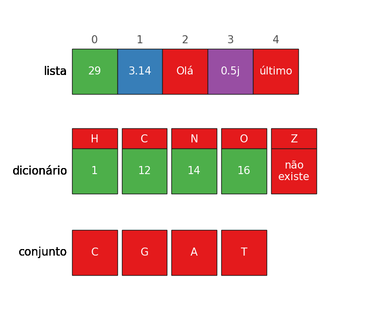
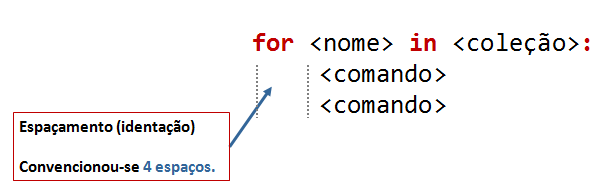

Coleções e iterações¶
Revisão sobre objetos¶
No capítulo anterior vimos que uma parte importante de um programa consiste na criação e modificação dos valores de "objetos".
Estes objetos são, na verdade, representados na memória do computador. O acesso a estes objetos é feito à custa de um nome.
A linguagem Python suporta uma variedade de tipos de objetos, dos quais já vimos os números e as strings.
n_aminoácidos = 20 # número inteiro
bases = 'AUCG' # string
print(f'Existem {n_aminoácidos} e as bases do mRNA são {bases}')
Existem 20 e as bases do mRNA são AUCG
Objetos booleanos¶
No Python existem mais dois objetos que representam os conceitos de verdadeiro e falso.
São eles True e False (começam por maiúscula).
Os resultados das condições, que muitas vezes usamos em if...elif...else são estes objetos.
Podemos obtê-los diretamente fazendo print() de condições lógicas, ou mesmo usando-os explicitamente:
a = 3.14
print(a > 2)
print(a > 5)
print(a > 2 and a < 5)
print(True and False)
print(True or False)
print(not True)
True
False
True
False
True
False
Coleções¶
Este capítulo diz respeito a objetos designados genericamente por "coleções".
Definição
Coleções são objetos que contêm mais do que um valor.
As principais coleções usadas em Python são:
- listas
- dicionários
- conjuntos
Mas convém também englobar as strings, vistas no capítulo anterior, neste universo das coleções, uma vez que partilham muitas das propriedades com as coleções acima referidas:
- strings
Uma definição muito breve e simples destas 3 coleções:

Uma lista (em inglês, list) é uma coleção de elementos em que cada um deles tem, implicitamente, uma posição. Estas posições estão numeradas a partir de zero. A posição de um elemento chama-se índice.
Um dicionário (em inglês, dictionary) é uma coleção obtida pela associação de "chaves" a "valores". Cada elemento de um dicionário tem uma chave e um valor. Não existe uma ordenação implícita num dicionário, mas as chaves, que não se repetem, têm um papel análogo aos índices das listas.
Um conjunto (em inglês, set) é apenas uma coleção de elementos que não se repetem, sem posições ou chaves. E, para já, não há mais nada a dizer sobre os conjuntos.
Listas¶
As listas são uma das coleções da linguagem Python mais usadas.
Vejamos como definir listas.
São usados [] para definir, de uma forma literal, uma lista, separando os elementos por ,.
vários = [2, 4, 3.1415, 'eu aqui', "fim da lista"]
print(vários)
[2, 4, 3.1415, 'eu aqui', 'fim da lista']
As listas são objetos e, por isso, podemos atribuír-lhes nomes. Como se pode ver no exemplo, foi atribuído o nome
vários a toda a lista. Este é um facto importante: um único nome serve para nos referirmos a toda a lista na sua globalidade.
As listas podem ter elementos de vários tipos, (números, strings, números complexos) e estes elementos podem até ser o resultado de expressões:
a = [19, 14/2, 5.0**3, 'Bom dia']
b = 1
c = [b, b+1, (b+2)**3]
print('a =', a)
print('c =', c)
a = [19, 7.0, 125.0, 'Bom dia']
c = [1, 2, 27]
Neste exemplo, a lista a contem 3 números e uma string. O valor de
dois dos números é o resultado de uma expressão.
Note-se, também, que na lista c os valores dos elementos são
calculados usando o valor atribuído ao nome b para calcular os
elementos da lista.
Indexação de listas¶
Uma propriedade fundamental das listas é que a ordem dos elementos tem significado e cada um deles tem, implicitamente, uma posição, o seu índice.
Num programa podemos nos referir a um só elemento da lista a partir da sua posição, fazendo uma "indexação" da lista com um número inteiro.
Um exemplo:
a = [19, 14/2, 5.0**3, 'Bom dia']
# 0 1 2 3
print(a[0])
print(a[1])
print(a[2])
print(a[3])
19
7.0
125.0
Bom dia
Neste exemplo, cada print() mostra um elemento diferente da lista.
Com uma indexação, obtemos o elemento que está na posição i de uma lista escrevendo
<nome da lista>[i]
Isto é, usamos também aqui [] para indexar a lista, mas à frente do nome da lista.
Até podemos nem dar nome a uma lista. Podemos indexar logo a seguir à definição:
dias_abril = [31, 28, 31, 30, 31][3]
print(dias_abril)
30
Nota: os primeiros [] estão a definir a lista e os segundos [] a indexar a lista, obtendo o elemento que está na posição 3.
As posições variam em que intervalo?
As posições começam de zero e vão até n-1 em que n é o número de elementos da lista.
São sempre números inteiros.
Dicionários¶
Definição
Dicionários são associações entre chaves e valores.
d = {'H': 1, 'Li': 3, 'Na': 11, 'K': 19}
Neste exemplo,
'H','Li','Na','K', são as chaves do dicionário
1, 3, 11, 19, são os respetivos valores
Na definição de um dicionário
- são usadas
{}para delimitar o dicionário - são usadas
,para separar cada par chave: valor - são usados
:para separar a chave do valor dentro de cada par.
Indexação de dicionários¶
Ao contrário das listas, os elementos não têm posições, mas um dicionário pode ser "indexável" utilizando as chaves para obter os respetivos valores:
d = {'H':1, 'Li':3, 'Na':11, 'K':19}
print('d =', d)
print(d['K'])
print(d['Li'])
d = {'H': 1, 'Li': 3, 'Na': 11, 'K': 19}
19
3
Para indexar um dicionário, obtemos o elemento que tem a chave k escrevendo
<nome do dicionário>[k]
Isto é, usamos também aqui [] para indexar os dicionários.
Podemos até indexar logo a seguir a definir o dicionário:
n_K = {'H':1, 'Li':3, 'Na':11, 'K':19} ['K']
print('Número atómico do potássio é', n_K)
Número atómico do potássio é 19
Strings e indexação de strings¶
Vimos as strings no capítulo anterior. Porquê introduzir aqui, num capítulo dedicado às coleções, as strings de novo?
Definição
As strings podem ser entendidas como uma coleções de caracteres (letras, símbolos, pontuação, espaços, números)
As strings são aparentadas com as listas: as strings também têm uma numeração das posições dos caracteres, a contar do zero, e também são "indexáveis", isto é, podemos obter o caracter que está numa determinada posição, usando [].
s = 'Eu sou uma pequena string'
# 0123456789
print(s[0])
print(s[3])
print(s[8])
E
s
m
Note-se que os espaços contam como caracteres.
Conjuntos¶
Um conjunto (set) é uma coleção com características simples: é uma coleção de elementos sem chaves e sem posições.
aminoácidos = {'I', 'Y', 'P', 'W', 'C', 'M', 'R',
'L', 'K', 'H', 'V', 'D', 'F', 'N',
'S', 'T', 'A', 'G', 'Q', 'E'}
print(aminoácidos)
{'L', 'H', 'E', 'S', 'A', 'M', 'T', 'Y', 'R', 'C', 'V', 'D', 'G', 'N', 'F', 'K', 'Q', 'I', 'W', 'P'}
Ao definir um conjunto usamos {} para delimitar e separamos os elementos por ,
A utilidade dos conjuntos torna-se mais clara sabendo que eles suportam operações típicas dos conjuntos da matemática, por exemplo a interseção e a reunião. Mais tarde veremos alguns exemplos.
Os conjuntos não são indexáveis.
Mas, uma curiosidade, não aceitam elementos repetidos:
bases = {'A', 'A', 'C', 'C', 'U', 'G'}
print(bases)
{'U', 'C', 'A', 'G'}
Funções de listas, dicionários e conjuntos¶
Nos próximos dois capítulos serão apresentadas funções "associadas" a cada um destes tipos de coleções. São estas funções que tornam a utilização de coleções muito poderosas.
Estas funções têm a forma geral
coleção.função(argumentos)
Vejamos, desde já, um pequeno exemplo: a função .count(), que pode ser usada com listas e strings, conta número de elementos (ou caracteres).
# Quantas glicinas existem nesta sequência?
seq = 'MSSLVTLNNGLKMPLVGLGCWKIDKKVCANQIYEAIKLGYRLFDGACDYGNEKEVGEGIR'
nG = seq.count('G')
print(nG, 'glicinas')
# Quantos meses do ano têm 30 dias?
n_dias = [31, 28, 31, 30, 31, 30, 31, 31, 30, 31, 30, 31]
n30 = n_dias.count(30)
print(n30, 'meses têm 30 dias')
8 glicinas
4 meses têm 30 dias
As restantes funções serão o foco dos dois próximos capítulos (não todas) mas aqui vai a referência para as funções disponíveis na documentação do Python, em
As funções de strings são, de longe, as mais numerosas.
len() e operador in¶
Apesar da especificidade de cada tipo de coleção, há três funcionalidades que são comuns a todas as coleções:
- determinar o número de elementos de uma coleção, com a função
len() - testar se um valor faz parte de uma coleção, com o operador
in - aplicar um conjunto de comandos a todos os elementos de uma coleção,
uma a um, com o comando
for
Comecemos pelas duas primeiras:
len() : número de elementos de uma coleção.¶
A função len() (abreviatura da palavra inglesa length) pode ser aplicada a qualquer coleção, tendo como resultado o
número de elementos contidos nessa coleção.
a = [2,4,6,8,10, 'viria o 12', 'e depois o 14'] # lista
s = 'Eu sou uma pequena string' # string
d = {'H':1, 'Li':3, 'Na':11, 'K':19} # dicionário
print(len(a))
print(len(s))
print(len(d))
7
25
4
Repare-se que, no caso das strings todos os caracteres entram para a contagem como elementos da string. No caso dos dicionários, contamos o número de pares chave: valor.
Para objetos que definimos explicitamente a função len() não parece ter muita utilidade.
Imagine um programa maior, capaz de processar um número elevado de sequências de proteínas. O comprimento de uma proteína é uma característica importante. A função len() seria uma ferramenta importante num programa desses.
seq = 'MSSLVTLNNGLKMPLVGLGCWKIDKKVCANQIYEAIKLGYRLFDGACDYGNEKEVGEGIR'
print(f'A proteína\n{seq}')
print('tem', len(seq), 'aminoácidos')
A proteína
MSSLVTLNNGLKMPLVGLGCWKIDKKVCANQIYEAIKLGYRLFDGACDYGNEKEVGEGIR
tem 60 aminoácidos
in: teste de inclusão¶
O "operador" in funciona como teste de inclusão: resulta Trueou False consoante um
elemento está ou não contido numa coleção. Funciona com qualquer tipo de coleção.
nums = [1,2,3,4,5,6,7,8,9,10]
if 4 in nums:
print(4, 'existe')
else:
print(4, 'não existe')
4 existe
Um exemplo com strings:
seq = 'ATGGTCAAACTTGTTGACTGCAAATGCGTACGT'
if 'U' in seq:
print('Existe', 'U')
else:
print('Não existe', 'U')
if 'TGT' in seq:
print('Existe', 'TGT')
else:
print('Não existe', 'TGT')
Não existe U
Existe TGT
Com dicionários, é verificado se um elemento está nas chaves ( e não nos valores):
grupo1 = {'H':1, 'Li':3, 'Na':11, 'K':19}
print('Mg' in grupo1)
False
Iterações: comando for¶
Um dos conceitos que pode ser aplicado a qualquer coleção, sendo, já agora, um dos mais poderosos conceitos da linguagem Python (e de muitas outras linguagens de programação) consiste em aplicar um conjunto de instruções ou comandos a cada um dos elementos de uma coleção, um a um.
Iteração é termo técnico muitas vezes utilizado para designar estas repetições de comandos elemento a elemento.
Em Python é usado o comado for para esse efeito.
É melhor começar com um exemplo:
Problema
Mostrar uma tabela de raízes quadradas de 1 a 10
print('tabela de raízes quadradas')
nums = [1,2,3,4,5,6,7,8,9,10]
for n in nums:
root = n**0.5
print(n, root)
tabela de raízes quadradas
1 1.0
2 1.4142135623730951
3 1.7320508075688772
4 2.0
5 2.23606797749979
6 2.449489742783178
7 2.6457513110645907
8 2.8284271247461903
9 3.0
10 3.1622776601683795
O que se passou durante a execução deste programa?
O comando for provoca a repetição de um conjunto de comandos aplicando esses
comandos a todos os elementos de uma coleção, um a um.
(O número de repetições é igual ao número de elementos da coleção, uma vez que os comandos são aplicados a todos os elementos mas à vez, um a um)
A estrutura geral do comando for é:

Vamos ao pormenor:
Os comandos que são repetidos são aqueles que estão nas linhas a seguir à linha do comando for
e "alinhadas" um pouco mais para o interior do texto do programa. No exemplo, essas linhas são
root = n**0.5
print(n, root)
Esse alinhamento interior (indentação), que, por convenção, são 4 espaços, define as linhas que contêm os comando a repetir. Podemos por quaisquer comandos válidos nessas linhas.
Esta é uma regra geral da linguagem Python: o alinhamento do começo
das linhas define blocos. Já tínhamos visto a propósito dos
blocos if...elif...else.
As linhas a repetir fazem um cálculo de root, como a raíz quadrada de n (e print() de ne root).
O que é o n? De onde apareceu? Qual o seu valor?
O comando for define o n: né o nome que é dado a cada elemento da lista nums, um a um.
Cada vez que os comandos são repetidos, n toma um valor diferente: da primeira vez é igual a 1, da segunda vez é igual a 2 e assim sucessivamente. n toma todos os valores da lista nums!
Porquê a lista nums? A coleção à qual vão ser aplicados os comandos a repetir é aquela que estiver à frente
de in e antes de : (naão esquecer os :, eles são obrigatórios, tal como o for e o in)
Recapitulando:
Em linguagem mais "humana" o comando for indica o seguinte procedimento:
Para cada elemento da lista
nums, e chamando esse elementon, repita-se as duas linhas seguintes,root = n**0.5eprint(n, root).
Vamos ver alguns exemplos da utilização de um comando for.
problema
Procurar um conjunto de números numa lista maior de números
nums = [1,2,3,4,5,6,7,8,9,10,11,15,27, 30, 40]
a_procurar = [1, 4, 7, 20, 40]
for n in a_procurar:
if n in nums:
print(n, 'existe na lista')
else:
print(n, 'não existe na lista')
4 existe na lista
7 existe na lista
20 não existe na lista
40 existe na lista
Usando um exemplo do capítulo anterior,
Problema
Indicar quais os anos bissextos dentro de uma lista
# Anos bissextos (sem input())
anos = [2015, 2014, 2013, 2012, 2000, 1900, 1800]
for a in anos:
if a % 4 == 0 and not (a % 100 == 0 and not a % 400 == 0):
print(a , "é bissexto")
else:
print(a, "nao é bissexto")
2015 nao é bissexto
2014 nao é bissexto
2013 nao é bissexto
2012 é bissexto
2000 é bissexto
1900 nao é bissexto
1800 nao é bissexto
A iteração de uma string com o comando for "percorre" todos os caracteres da string, incluíndo os espaços
e a pontuação:
seq = 'ATGGT CAAAC TTGTT'
for b in seq:
print(b)
A
T
G
G
T
C
A
A
A
C
T
T
G
T
T
Um outro exemplo de for com uma string:
Problema
Dada a sequência de uma proteína, indicar a presença de lisinas (K)
Passar por todos os aminoácidos da sequência é simples, usamos um comando
for. Para testar se estamos na presença de um K, usamos um if:
seq = 'ADKHLILTAVGGCWFHVAFWEVEKAGAHKWE'
for aa in seq:
if aa == 'K':
print(aa)
K
K
K
Vamos agora supor que temos uma pequena extensão deste problema:
Problema
Dada a sequência de uma proteína, indicar a presença de lisinas (K) e leucinas (L)
Mais uma vez, percorremos os aminoácidos da sequência com for. Para
testar se estamos na presença de um K ou um L, usamos inpara testar se o aminoácido pertence à string "KL".
seq = 'ADKHLILTAVGGCWFHVAFWEVEKAGAHKWE'
for aa in seq:
if aa in 'KL':
print(aa)
K
L
L
K
K
Ou, para visualizar bem a posição das lisinas e leucinas:
seq = 'ADKHLILTAVGGCWFHVAFWEVEKAGAHKWE'
print(seq)
for aa in seq:
if aa in 'KL':
print(aa, end='')
else:
print('-', end='')
ADKHLILTAVGGCWFHVAFWEVEKAGAHKWE
--K-L-L----------------K----K--
print(, end=)
O argumento end= é usado na função print() para que não haja uma mudança de linha
no final daquilo que é apresentado por esta função. A mudança de linha é substituída
por qualquer outra string, indicada por end=.
No caso deste exemplo é indicado end='' ou seja,
absolutamente nada no final do print(). Isto faz com que os caracteres da segunda
linha apareçam consecutivamente e não em linhas separadas.
Finalmente, a iteração de um dicionário com o comando for "percorre" as chaves do dicionário
(apenas as chaves).
grupo1 = {'H':1, 'Li':3, 'Na':11, 'K':19}
print('elementos do grupo 1')
for e in grupo1:
print(e)
H
Li
Na
K
Mas é fácil usar as chaves para obter uma tabela de chaves-valores, usando a indexação do dicionário com cada uma das chaves. Compare-se este exemplo com o anterior:
grupo1 = {'H':1, 'Li':3, 'Na':11, 'K':19}
print('elementos do grupo 1')
for e in grupo1:
print(e, grupo1[e])
elementos do grupo 1
H 1
Li 3
Na 11
K 19
"Acumulações"¶
Problema
Somar todos os numeros de 1 a 10
nums = [1,2,3,4,5,6,7,8,9,10]
s = 0
for i in nums:
s = s + i
print('a soma de', nums, 'é', s)
a soma de [1, 2, 3, 4, 5, 6, 7, 8, 9, 10] é 55
A novidade neste exemplo é o uso de um "acumulador" de resultados parciais de uma operação.
Neste caso, o papel de s é o de "acumular" a soma de sucessivos
valores obtidos da iteração dos elementos da lista nums.
Inicialmente, antes do programa entrar no comando for, s tem o valor 0.
Cada vez que "passamos" a um novo valor i, isto é, a um novo valor da lista nums,
este é somado ao valor anterior de s, fazendo s = s + i. Assim, conseguimos
acumular a soma de todos os i e, no final das repetições do comando for, s é igual
à soma de todos os números.
É interessante mostrar os valores que estão associados a s ao longo
das repetições. Adaptando o programa anterior com algumas utilizações
adicionais da função print() podemos ver esses valores a mudar para
cada i:
nums = [1,2,3,4,5,6,7,8,9,10]
s = 0
for i in nums:
print('i =', i)
print(' s antes da soma', s)
s = s + i
print(' s depois da soma', s)
print(f'a soma é {s}')
i = 1
s antes da soma 0
s depois da soma 1
i = 2
s antes da soma 1
s depois da soma 3
i = 3
s antes da soma 3
s depois da soma 6
i = 4
s antes da soma 6
s depois da soma 10
i = 5
s antes da soma 10
s depois da soma 15
i = 6
s antes da soma 15
s depois da soma 21
i = 7
s antes da soma 21
s depois da soma 28
i = 8
s antes da soma 28
s depois da soma 36
i = 9
s antes da soma 36
s depois da soma 45
i = 10
s antes da soma 45
s depois da soma 55
a soma é 55
range(): gerador de números inteiros¶
Problema
Somar todos os números de 1 a 1000
Poderíamos adaptar o programa anterior. Mas teríamos de criar uma lista com 1000 números consecutivos, explicitamente (e manualmente).
Tem de haver uma solução melhor.
Usamos para o efeito a função range() que gera números inteiros
consecutivos e pode ser utilizada em vez de uma coleção no comando for:
s = 0
for i in range(1, 1001):
s = s + i
print('a soma dos números de 1 a 1000 é', s)
a soma dos números de 1 a 1000 é 500500
A função range(), que pode ter até 3 argumentos,
range(início, fim, passo), e gera uma sequência de números inteiros, desde um número inteiro inicial (o
início) até um número inteiro final exclusivé (o fim), com um
determinado espaçamento (o passo).
O número inicial e o "passo" são opcionais.
Se forem omitidos,
- o início é 0
- o passo é 1
Não esquecer que o valor do fim é excluído
Para melhor compreender estas regras, podemos mostrar os
resultados da função range()não num ciclo for, mas transformando
os resultados do range()numa lista.
Como fazê-lo? O Python tem uma outra função, list(), que tenta transformar
o seu argumento numa lista, se possível.
Um pequeno exemplo da função list() em ação:
seq = 'ATGGTCAAACTTGTT'
seql = list(seq)
print(seql)
['A', 'T', 'G', 'G', 'T', 'C', 'A', 'A', 'A', 'C', 'T', 'T', 'G', 'T', 'T']
Voltando agora às várias modalidades da função range():
print('-- range(12) ----------')
# começa em 0, acaba em 12 (exclusivé), e salta de 1 em 1.
nums = list(range(12))
print(nums)
-- range(12) ----------
[0, 1, 2, 3, 4, 5, 6, 7, 8, 9, 10, 11]
print('-- range(5, 12) ----------')
# começa em 5, acaba em 12 (exclusivé).
nums = list(range(5, 12))
print(nums)
-- range(5, 12) ----------
[5, 6, 7, 8, 9, 10, 11]
print('-- range(5, 12, 2) ----------')
# começa em 5, acaba em 12 (exclusivé) e salta de 2 em 2.
nums = list(range(5, 12, 2))
print(nums)
-- range(5, 12, 2) ----------
[5, 7, 9, 11]
Problema
Calcular o factorial de 1000
fact = 1
for i in range(1, 1001):
fact = fact * i
print('o factorial de 1000 é', fact)
o factorial de 1000 é 402387260077093773543702433923003985719374864210714632543799910429938512398629020592044208486969404800479988610197196058631666872994808558901323829669944590997424504087073759918823627727188732519779505950995276120874975462497043601418278094646496291056393887437886487337119181045825783647849977012476632889835955735432513185323958463075557409114262417474349347553428646576611667797396668820291207379143853719588249808126867838374559731746136085379534524221586593201928090878297308431392844403281231558611036976801357304216168747609675871348312025478589320767169132448426236131412508780208000261683151027341827977704784635868170164365024153691398281264810213092761244896359928705114964975419909342221566832572080821333186116811553615836546984046708975602900950537616475847728421889679646244945160765353408198901385442487984959953319101723355556602139450399736280750137837615307127761926849034352625200015888535147331611702103968175921510907788019393178114194545257223865541461062892187960223838971476088506276862967146674697562911234082439208160153780889893964518263243671616762179168909779911903754031274622289988005195444414282012187361745992642956581746628302955570299024324153181617210465832036786906117260158783520751516284225540265170483304226143974286933061690897968482590125458327168226458066526769958652682272807075781391858178889652208164348344825993266043367660176999612831860788386150279465955131156552036093988180612138558600301435694527224206344631797460594682573103790084024432438465657245014402821885252470935190620929023136493273497565513958720559654228749774011413346962715422845862377387538230483865688976461927383814900140767310446640259899490222221765904339901886018566526485061799702356193897017860040811889729918311021171229845901641921068884387121855646124960798722908519296819372388642614839657382291123125024186649353143970137428531926649875337218940694281434118520158014123344828015051399694290153483077644569099073152433278288269864602789864321139083506217095002597389863554277196742822248757586765752344220207573630569498825087968928162753848863396909959826280956121450994871701244516461260379029309120889086942028510640182154399457156805941872748998094254742173582401063677404595741785160829230135358081840096996372524230560855903700624271243416909004153690105933983835777939410970027753472000000000000000000000000000000000000000000000000000000000000000000000000000000000000000000000000000000000000000000000000000000000000000000000000000000000000000000000000000000000000000000000000000000000000000000000000000000000000000000000000000000000
Mais uma vez, temos de "acumular" os produtos parciais sucessivos. fact tem esse
papel. É análogo a s nos exemplos anteriores. Aqui a diferença é que
estamos a acumular produtos e, por isso, fact tem de ter o valor
inicial de 1 antes de começarem as repetições do comando for. Por outro
lado, factdeve multiplicar por cada valor novo de i, com fact = fact * i.
Agora um problema análogo, mas envolvendo strings:
Problema
Obter a sequência da cadeia complementar de uma sequência de DNA
Se num programa tivermos uma string contendo uma sequência de um ácido nucleico, então podemos percorrer todas as "bases" da sequência:
seq = 'ATGGTCAAACTTGTTGACTGCAAATGCGTACGT'
for b in seq:
print(b, end=' ')
A T G G T C A A A C T T G T T G A C T G C A A A T G C G T A C G T
Note-se o end=' ' para deixar apenas um espaço no final de print()e não uma mudança de linha.
Agora podemos resolver o problema do cálculo da sequência complementar.
Parte da estratégia consiste em ir "adicionando" os símbolos das bases complementares a
uma string que, inicialmente, está vazia, isto é, é igual a '' e, no fim das repetições,
"acumulou" todos os símbolos.
Temos também de "programar" o cálculo da base complementar. Para isso podemos seguir uma das quatro alternativas para as quatro bases possíveis:
seq = 'ATGGTCAAACTTGTTGACTGCAAATGCGTACGT'
seqcomp = ''
for b in seq:
if b == 'A':
bcomp = 'T'
elif b == 'T':
bcomp = 'A'
elif b == 'G':
bcomp = 'C'
else:
bcomp = 'G'
seqcomp = seqcomp + bcomp
print('sequência: ', seq)
print('complementar:', seqcomp)
sequência: ATGGTCAAACTTGTTGACTGCAAATGCGTACGT
complementar: TACCAGTTTGAACAACTGACGTTTACGCATGCA
Neste exemplo, as letras das bases complementares foram adicionadas, uma
a uma, à string seqcomp.
Antes da iteração com for, seqcomp é criada como uma "string
vazia". As duas aspas consecutivas na atribuição seqcomp = '' definem,
precisamente, uma uma "string vazia".
Em cada repetição adicionamos uma base complementar nova fazendo seqcomp = seqcomp + bcomp.
Convém relembrar que podemos "adicionar" strings.
O programa pode ser modificado (melhorado) eliminando os if...elif...elif...else.
A ideia é usar um dicionário que associe cada símbolo de uma base ao símbolo da sua base complementar:
seq = 'ATGGTCAAACTTGTTGACTGCAAATGCGTACGT'
seqcomp = ''
complementares = {'A': 'T', 'T': 'A', 'C': 'G', 'G': 'C'}
for b in seq:
seqcomp = seqcomp + complementares[b]
print('sequência: ', seq)
print('complementar:', seqcomp)
sequência: ATGGTCAAACTTGTTGACTGCAAATGCGTACGT
complementar: TACCAGTTTGAACAACTGACGTTTACGCATGCA
Nesta versão, vamos adicionando a seqcomp aquilo que obtemos indexando o dicionário com
cada uma das bases b da sequência. Ao indexarmos o dicionário, usando essa base b como chave (que é apenas uma letra), obtemos o símbolo da base complementar, como valor: seqcomp = seqcomp + complementares[b].
Isto começa a complicar um pouco. Repare que, neste exemplo, misturamos:
- a iteração de strings, letra a letra
- a indexação (com
[]) de um dicionário, que funciona como tabela para a transformação base → base complementar. - a soma de strings e o truque de acumulação de resultados parciais.
Sem muito esforço, podemos formatar um pouco a apresentação das duas cadeias, na vertical e pondo em evidência a correspondência entre as bases, desenhando uma escada da dupla hélice :
seq = 'ATGGTCAAACTTGTTGACTGCAAATGCGTACGT'
complementares = {'A': 'T', 'T': 'A', 'C': 'G', 'G': 'C'}
for b in seq:
print(b, '-', complementares[b])
A - T
T - A
G - C
G - C
T - A
C - G
A - T
A - T
A - T
C - G
T - A
T - A
G - C
T - A
T - A
G - C
A - T
C - G
T - A
G - C
C - G
A - T
A - T
A - T
T - A
G - C
C - G
G - C
T - A
A - T
C - G
G - C
T - A
Agora um problema mais elaborado:
Problema
Converter uma sequência com códigos de uma letra de aminoácidos para códigos de 3 letras, usando um dicionário para a conversão.
trans = {'A': 'Ala', 'C': 'Cys', 'E': 'Glu', 'D': 'Asp',
'G': 'Gly', 'F': 'Phe', 'I': 'Ile', 'H': 'His',
'K': 'Lys', 'M': 'Met', 'L': 'Leu', 'N': 'Asn',
'Q': 'Gln', 'P': 'Pro', 'S': 'Ser', 'R': 'Arg',
'T': 'Thr', 'W': 'Trp', 'V': 'Val', 'Y': 'Tyr'}
# Problema: transformar seq1 numa string com os códigos de 3 letras dos aa
seq1 = 'ADKLITCWFHHWE'
seq3 = ''
for aa in seq1:
seq3 = seq3 + trans[aa] + '-'
print(seq1, 'é o mesmo que ', seq3)
ADKLITCWFHHWE é o mesmo que Ala-Asp-Lys-Leu-Ile-Thr-Cys-Trp-Phe-His-His-Trp-Glu-
Somas e fatoriais: a maneira simples¶
Os exemplos de acumulações numéricas, somas e fatorial foram resolvidos com acumuladores de forma a mostrar o conceito subjacente a todas as acumulações.
No entanto, o Python tem funções para calcular somas e fatoriais. Naturalmente, é muito mais simples utilizar estas funções.
Para somas existe a função sum():
s = sum(range(1, 1001))
print('a soma dos números de 1 a 1000 é', s)
a soma dos números de 1 a 1000 é 500500
Para fatoriais existe a função factorial(), mas pertence ao módulo math:
import math
f = math.factorial(100)
print('100! =', f)
100! = 93326215443944152681699238856266700490715968264381621468592963895217599993229915608941463976156518286253697920827223758251185210916864000000000000000000000000
Função enumerate()¶
Voltando agora ao problema da pesquisa de certos aminoácidos numa sequência, poderá ser útil indicar não só a presença de um aminoácido mas também a posição em que eles são encontrados:
Problema
Dada a sequência de uma proteína, indicar a presença de lisinas (K) e leucinas (L), construíndo uma tabela com posições e códigos K ou L
Podemos usar um contador das posições dos aminoácidos, "acumulando" a soma de 1 por aminoácido:
seq = 'ADKHLILTAVGGCWFHVAFWEVEKAGAHKWE'
i = 0
for aa in seq:
if aa in 'KL':
print(i, ':', aa)
i = i + 1
2 : K
4 : L
6 : L
23 : K
28 : K
O "acumulador" é o i: cada vez que se processa um aminoácido novo, a
atribuição i = i + 1 aumenta uma unidade ao valor de i , fazendo com que i vá
"contando" os aminoácidos.
É tão frequente a necessidade de percorrer os elementos de uma coleção
e, simultaneamente, aceder às posições desses elementos, que a linguagem
Python tem uma função para combinar os dois "aos pares", a função enumerate().
Vejamos o que resulta da aplicação da função enumerate() a uma string:
seq = 'ADKHLILTAVGGCWFHVAFWEVEKAGAHKWE'
for x in enumerate(seq):
print(x)
(0, 'A')
(1, 'D')
(2, 'K')
(3, 'H')
(4, 'L')
(5, 'I')
(6, 'L')
(7, 'T')
(8, 'A')
(9, 'V')
(10, 'G')
(11, 'G')
(12, 'C')
(13, 'W')
(14, 'F')
(15, 'H')
(16, 'V')
(17, 'A')
(18, 'F')
(19, 'W')
(20, 'E')
(21, 'V')
(22, 'E')
(23, 'K')
(24, 'A')
(25, 'G')
(26, 'A')
(27, 'H')
(28, 'K')
(29, 'W')
(30, 'E')
ou seja, conseguimos percorrer a string, mas obtemos pares do tipo (posição, elemento).
O mais interessante é que, no comando for com a função
enumerate()podemos usar um par de nomes para nos referirmos
simultaneamente à posição e ao elemento. Isto é chamado desdobramento.
seq = 'ADKHLILTAVGGCWFHVAFWEVEKAGAHKWE'
for (i, a) in enumerate(seq):
print(i, ':', a)
0 : A
1 : D
2 : K
3 : H
4 : L
5 : I
6 : L
7 : T
8 : A
9 : V
10 : G
11 : G
12 : C
13 : W
14 : F
15 : H
16 : V
17 : A
18 : F
19 : W
20 : E
21 : V
22 : E
23 : K
24 : A
25 : G
26 : A
27 : H
28 : K
29 : W
30 : E
Na linguagem Python há várias situações em que podemos fazer desdobramentos de nomes. Um caso que vimos anteriormente é nos comandos de atribuição de nomes a valores, em que podemos escrever, por exemplo,
a, b, c = 1, 4, 1
Este comando desdobra os nomes para os respetivos valores, resultando daqui que várias atribuições de nomes podem ser escritas na mesma linha.
Usando a função enumerate(), o problema de tabelar as posições das
leucinas e argininas pode ser escrito de uma forma mais compacta, sem
usar explicitamente um "contador da posição":
seq = 'ADKHLILTAVGGCWFHVAFWEVEKAGAHKWE'
for i, aa in enumerate(seq):
if aa in 'KL':
print(i, ':', aa)
2 : K
4 : L
6 : L
23 : K
28 : K
enumerate()não se aplica só a strings. Ela funciona com qualquer tipo de coleção.
Com listas, obtemos as posições de cada elemento da lista, como seria de esperar,
mas com dicionários e conjuntos a função enumerate() também funciona, embora as posições que
se vão obtendo não correspondam necessariamente a nenhuma ordem lógica dos elementos, que não existe neste tipo de coleções.
Comados for encaixados.¶
Podemos "encaixar" comandos for dentro de outros comandos for. O
efeito é que, para cada iteração de um ciclo for mais "exterior"
percorremos todos os elementos da coleção num comando for mais
"interior".
O melhor será ilustrar com um exemplo clássico, com três níveis de
comandos for:
Problema
Gerar os 64 codões do código genético
bases = 'AUGC'
for b1 in bases:
for b2 in bases:
for b3 in bases:
c = b1 + b2 + b3
print(c, end=' ')
AAA AAU AAG AAC AUA AUU AUG AUC AGA AGU AGG AGC ACA ACU ACG ACC UAA UAU UAG UAC UUA UUU UUG UUC UGA UGU UGG UGC UCA UCU UCG UCC GAA GAU GAG GAC GUA GUU GUG GUC GGA GGU GGG GGC GCA GCU GCG GCC CAA CAU CAG CAC CUA CUU CUG CUC CGA CGU CGG CGC CCA CCU CCG CCC
Comando break¶
O comando break permite uma saída prematura de uma iteração: podemos
não chegar ao fim de todos os elementos da coleção que está a ser
iterada se passarmos por um comando break.
Tem utilidade desde que seja utilizado com um if para testar uma
condição.
Problema: obter um esquema das correspondências entre uma sequência de DNA e a sequência complementar, mas parar assim que for encontrado um par C - G.
seq = 'ATGGTTAAACTTGTTGACTGCAAATGCGTACGT'
complementares = {'A': 'T', 'T': 'A', 'C': 'G', 'G': 'C'}
for b in seq:
print(b, '-', complementares[b])
if b == 'C':
break
A - T
T - A
G - C
G - C
T - A
T - A
A - T
A - T
A - T
C - G
Comando continue¶
Muito semelhante ao comando break é o comando continue.
Este não força uma saída prematura de uma iteração: o seu efeito é
passar imediatamente para a iteração seguinte, como se voltassemos à
linha imediatamente a seguir ao comando for, mas já para o elemento
seguinte da coleção.
Vejamos com um exemplo:
Problema: obter um esquema das correspondências entre uma sequência de DNA e a sequência complementar. Saltar todos as ligações A - T.
seq = 'ATGGTTAAACTTGTTGACTGCAAATGCGTACGT'
complementares = {'A': 'T', 'T': 'A', 'C': 'G', 'G': 'C'}
for b in seq:
if b in 'AT':
continue
print(b, '-', complementares[b])
G - C
G - C
C - G
G - C
G - C
C - G
G - C
C - G
G - C
C - G
G - C
C - G
G - C
Comando while¶
O comando while é uma outra forma de repetirmos algumas linhas dentro
de um programa. Nisto é semelhante a um comando for.
No entanto, o comando while está associado ao facto de uma condição
permanecer verdadeira ou não. Enquanto que num comando for percorremos
os elementos de uma coleção, o comando while pode não ter nada a ver
com os elementos de uma coleção.
O comando while é escrito como um bloco de linhas que é executado
enquanto uma condição for verdadeira:
#contagem decrescente
count = 10
while count > 0:
print(count)
count = count - 1
print('kabum!')
10
9
8
7
6
5
4
3
2
1
kabum!
O comando while é pouco usado na linguagem Python. É mais frequente
repetirmos operações enquanto percorremos os elementos de uma coleção.
Por isso, o comando for é mais usado do que o comando while.